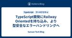

Sansan Tech Blog
https://buildersbox.corp-sansan.com/
Sansanのものづくりを支えるメンバーの技術やデザイン、プロダクトマネジメントの情報を発信
フィード
チーム開発合宿 2024 in 徳島県神山町（技術編） 1
1
Sansan Tech Blog
こんにちは、研究開発部 Architectグループの辻田です。 この記事はチームメンバー合同で作成した記事です。 先日、神山ラボへ開発合宿に行ってきました。この記事では合宿中に取り組んだ内容について紹介します。合宿の目的や、全体の様子はチーム開発合宿 2024 in 徳島県神山町（レポート編）をご参照ください。 本記事は【R&D DevOps通信】という連載記事のひとつです。
13時間前

TypeScript開発にRailway Orientedを持ち込み、より型安全なエラーハンドリングへ 104
Sansan Tech Blog
Digitization部 Bill One Entry*1グループの秋山です。 はじめに Domain Modeling Made Functionalというスゴ本 補講：Make Illegal States Unrepresentable バックエンドの処理を抽象化する 手続き型プログラミングの典型例 課題1：制約のないエラーハンドリング 課題2：低い可読性 課題3：エラーハンドリングの低い網羅性 Railway Oriented Programming TypeScriptで型安全にエラーハンドリングする ステップ1：サブ関数の出力はResult型で表現する ステップ2：サブ関数にRe…
2日前
チーム開発合宿 2024 in 徳島県神山町（レポート編） 1
Sansan Tech Blog
こんにちは、研究開発部 Architectグループの辻田です。 今年も神山ラボへ開発合宿に行ってきました！新メンバーも加わり、チームとしては2回目の開発合宿*1です。本記事では合宿レポートを紹介します。合宿で取り組んだ技術的な内容は別記事で出しますので乞うご期待です。 本記事は【R&D DevOps通信】という連載記事のひとつです。 *1:前回の合宿記事はこちらです。
3日前
Firehoseを介したS3への中間データ保管と検索性強化 1
Sansan Tech Blog
はじめに こんにちは、研究開発部 Architectグループの辻田です。 SansanではユーザーフィードバックがSlackのフィードバックチャンネルに集まります。研究開発部ではこれらからモデルやアルゴリズムなどの改善をしています。 そのため、より多くのフィードバックに早く対応することが改善サイクルを回していく上で重要な活動となります。 本記事では、改善対象のデータ抽出を効率化するために、Amazon Data Firehoseを使用してS3に中間データをストリーミングし、Athenaを使ってデータ検索を実現する方法を紹介します。さらに、パーティショニングの適用によって検索性を向上させる手法も…
6日前
Eightのデータ抽出基盤をサーバーレスで作る際に工夫したこと 1
Sansan Tech Blog
こんにちは、Eight Engineering Unitの井上です。 Eightのデータ抽出基盤である Data Management Platform（以下、DMP）の開発を担当しています。 はじめに Eightは330万人を超えるユーザーにご利用いただいており、お預かりしているデータ量も日々多くなっています。 データが多いことに加えて抽出条件もさまざまなため、データアクセスは基本的にフルスキャンとなり高い負荷がかかります。 負荷は高いのですが頻度は高くないこともあり、DMPではサーバーレスのGlueとAthenaを利用して低コストで安定した稼動となる構成を採用しました。 ざっくりとしたシス…
9日前
terraform planの自動化に向けて直面した課題と解決策 43
Sansan Tech Blog
はじめに こんにちは！ 技術本部 Bill One Engineering Unit（以下、Bill One EU）の笹島です。 IaC推進チーム（横串チームの1つ）として、CI環境でのTerraform Planの自動化に取り組んできました。 横串チームとは、Bill One EU内の各グループの垣根のない横断チームであり、Bill Oneで抱えている課題を解決するために有志で集まったメンバーによって構成されています。 IaC推進チームとは、文字通りインフラのコード化を推進するチームです。 本記事では、CI環境でセキュアなTerraform Plan自動実行を実現するにあたって直面した課題と…
10日前
Salesforceの「取引の開始」関連項目がnullになるタイミングについての話 1
Sansan Tech Blog
はじめに 初めまして、技術本部 Sansan Engineering Unit Data Hubグループの菊池です。 約6年間Salesforce エンジニアとしてさまざまな経験を積み、2021年1月からSansan株式会社に入社しました。 現在は、営業DXサービス「Sansan」とSalesforce連携を実現する、Data Hub AppExchange Packageの開発/運用・保守をしています。 今回とある調査で初めて知った仕様があったので、本ブログで共有します。
13日前
ChatGPTを使ってVisualforceでSLDSコンポーネントを使った開発を快適にする 1
Sansan Tech Blog
こんにちは、技術本部 Sansan Engineering Unit Data Hubグループの小林です。 今回は、SalesforceのVisualforce開発に当たって、Lightningの見た目で開発をしたいときに便利なSalesforce Lightning Design System（以降、SLDS）コンポーネントを使う際にChatGPTを使うと便利だよ！というお話をします。 そもそもSLDSコンポーネントをVisualforceで使う機会が少なくなってきていると思いますが、エンタープライズ向けの開発でまだまだユーザがClassic UIを使っている…なんてことも少なくないので、渋…
14日前

Swift Macrosの作り方
Sansan Tech Blog
こんにちは！技術本部 Mobile ApplicationグループでiOSエンジニアをしている長﨑です。Sansanアプリでは自分たちで定義したSwift Macrosを開発に導入し始めています。Swift Macrosについての勉強会も社内で実施しており、せっかくなので勉強会のコンテンツを記事にしてみます。 この記事では、Swift Macrosを開発するに当たって必要となる基礎知識からマクロの実装方法、CocoaPodsを使ったプロジェクトへの組み込み方法について、解説していきます。
15日前
30代からプログラミングを本格的に始めたエンジニアが生産性について思うこと
Sansan Tech Blog
最近キーボードで文字を打つのが面倒になってきている技術本部 Eight Engineering Unitの斉藤です。 キーボードは既に100年以上使われ続けているみたいですね。そろそろ新しい入力の方法ができてもよさそうです。 例えば、頭で考えていることが文字に起こせたら、AIに任せるよりももっと便利だと思います。前置きはさておき、Sansanではちょっと前にエンジニアの生産性と生産量の最大 化が話題になっていました。このブログをご覧の方ならご存知の方も多いのではないでしょうか。私はこれまで何度か転職をしていますが、どの職場でも例外なくこの話題が挙がりました。 チームとして、あるいは事業としてど…
16日前
フロントエンドとバックエンドの一貫したバリデーションで開発プロセスに調和と効率化をもたらす
Sansan Tech Blog
技術本部 Digitization部の湯村です。 新規アプリケーション開発で採用したバリデーションロジックの管理方法を紹介します。
17日前
テックリードによる社内キャリアイベントを開催しました
Sansan Tech Blog
こんにちは。技術本部 Digitization部 Bill One Entryグループでエンジニアをしている大森です。 普段の業務に加えてTech道場というイベントの運営に関わっており、本記事はそのイベントのレポートです。Tech道場とは、最新の技術や生産性を高める技術、そしてエンジニアの技術力に触れることを目的とした全社員向けの社内イベントです。*1 今回のTech道場では、主にエンジニアをターゲットとした企画として、テックリードによる社内キャリアイベントを開催しました。 *1:Tech 道場再始動しました！. Sansan Tech Blog. https://buildersbox.co…
20日前
チームで Learning Session を始めてみた
Sansan Tech Blog
はじめに はじめまして。技術本部 Sansan Engineering Unit Data Hubグループの今村です。みなさんはインプットをどのようにアウトプットしているでしょうか？もちろん業務が1番のアウトプットの場であることは間違いありません。しかし、私たちのチームでは次のような問題意識がありました。 そうは言ってもまだまだアウトプットが足りない アウトプットの場が業務だけだと、学んだことが実際に使われなかった場合、偏りが生じる 学んだ知識がプロジェクトを担当したメンバーだけに閉じてしまってチーム全体に広がらない 以上の問題を解決するために、私たちは「Learning Session」とい…
21日前
AndroidでBluetooth Low EnergyのL2CAP通信を行う方法と開発で得た知見
Sansan Tech Blog
技術本部 Mobile Applicationグループに所属する北村です。SansanとEightの両プロダクトをまたぐプロダクト横断チームの一員として、モバイル領域の中長期的な技術的課題の解決や、PoCの開発を担当しています。今回は昨年9月にリリースした、Eightのタッチ名刺交換機能をテーマに、そこで得た知見をこの記事で共有します。 jp.corp-sansan.com タッチ名刺交換とは、Eightのアプリを開いた状態で、同じくEightのアプリを開いた他のAndroid端末やiOS端末と自端末をタッチすることで、デジタル名刺が交換できる機能です。 その際にBluetooth Low E…
22日前
Azure Functionsでの大量データ処理とグレースフルシャットダウン（後編）
Sansan Tech Blog
技術本部Sansan Engieering Unit Data Hubグループの藤原です。前回はAzure Functions好きにしか刺さらないとがった内容を書いてしまいました。反省しているので、今回は間口を広げて.NETの標準クラスライブラリ好きにも刺さる内容になっています。 前回、グレースフルシャットダウン対応のバグを修正したパッチを適用したが、実はうまくいっていなかった……というところまで書きました。今回はさらに深く入り込み、その問題も直した話になっています。一言でいうと、Event Hubトリガーを使っている場合、SDKのバージョンによってはメッセージが処理されないことがあります（M…
23日前
Azure Functionsでの大量データ処理とグレースフルシャットダウン（前編）
Sansan Tech Blog
技術本部Sansan Engieering Unit Data Hubグループの藤原です。普段はプロダクトのアーキテクチャを改善したり、技術的な課題を解決したり、たまにOSSを書いたりコントリビュートしたりしています。 今年はSansan Data Hubの日々の開発や運用で突き当たっている課題をベースに、現在取り組んでいることや、これから取り組みたいことについて紹介していきたいと思います。今回は、Azure Functionsでの大量データ処理をするとき、グレースフルシャットダウン関連で遭遇した問題について、Azure Functionsの内部構造に触れつつ紹介します。一言でいうと、Even…
24日前
生産性指標をFour Keysから変更した話
Sansan Tech Blog
技術本部 Mobile Applicationグループの山本です。名刺アプリEightの開発を行っています。今回はMobile ApplicationグループのEight開発チームの生産性指標をFour Keysからベロシティを含む別の値に変更した話をします。一般的にはベロシティは生産性指標にすべきではない、Four Keysは生産性指標として適切であるという評価だと思います。もちろんそれは理解した上でこの選択をしています。その理由について説明します。なお組織全体がこのように考えているわけではないということに御注意ください。例えば同じMobile ApplicationグループでもSansan…
1ヶ月前
Active Support Instrumentation について
Sansan Tech Blog
技術本部 Sansan Engineering Unit Nayose グループでエンジニアをしている冨田です。業務では、Ruby on Rails（以降 Rails）を使って名寄せサービスを開発しています。 今回は、Rails などの Ruby コード内のイベント計測に使われる、Active Support Instrumentation について解説します。本 API を利用することで、アプリケーション内で発生するさまざまなイベントを計測し、パフォーマンス改善やデバッグなどの調査に役立てられます。直近 Nayose グループでは、問題調査のために、特定テーブルへの SQL とその呼び出し元…
1ヶ月前
Sansan Androidチームのライブラリアップデートの取り組みについて
Sansan Tech Blog
こんにちは。 この記事は、技術本部 Mobile ApplicationグループでSansan（※プロダクトとしてのSansan）のAndroid開発を行っている、桑原、小林、鎌田、原田の共著でお届けします。 今回は、アプリで使用しているライブラリのアップデートについて、 Sansanではどのようなポリシーで行っているのか そのポリシーを守るためにしていること そこから見えてくる課題 そして今後について をお話します。
1ヶ月前
Order Oneでのドメインイベント実装
Sansan Tech Blog
技術本部 Strategic Products Engineering Unit Order One Devグループで受注業務のDXから、事業を加速するプロダクトOrder Oneの開発をしている山邊です。 本題に入る前にお知らせです。2/27 (火) に「自由な発想でつながる、失敗談を語るLTパーティー」というイベントを開催します。 ぜひ、お気軽にご参加ください！ sansan.connpass.com Order Oneにドメインイベント・非同期イベントの仕組みを導入したので、仕組みの紹介をしたいと思います。ドメインイベントの導入を検討している方の役に立てば幸いです。
1ヶ月前
SendGridを活用したメールの送受信機能を開発した話
Sansan Tech Blog
こんにちは、技術本部 Strategic Products Engineering Unit Order One Devグループの中塚です。 Order Oneの新機能としてメール連携機能をリリースしました。 受注専用アドレスがOrder Oneユーザに対して発行され、そのアドレスに対して注文メールを送信することで、Order One上で直接メール経由の注文書を受信できるようになりました。 また、注文に関するメールでのやり取りもOrder One上でできるようになっています。 この記事では、メール連携機能でどのようにメールの送受信を実現したかを紹介します。
1ヶ月前
AWS Glueを使ってバッチ処理を60倍高速化した話
Sansan Tech Blog
初めまして、技術本部Digitization部データ化グループ所属の高田です。 今回はAWS GlueのJobを使ってバッチ処理を60倍高速化した話をします。 この記事は以下の内容を共有しています。 AWS Glueの概要とメリット Apache Sparkの概要とメリット Pythonを使ったAWS Glue ETL Jobの書き方（一例）
1ヶ月前
Apollo GraphQL× Express で Playground ページの URL パスを変更する方法
Sansan Tech Blog
こんにちは、Sansan Engineering Unit の渡邉です🦐 直近で Apollo GraphQL の Express 向けライブラリを利用して API を開発していたのですが、 Playground ページに個別の URL パスを設定する方法が調べても良いページが見つからなく困ったので記事にまとめてみました🙋
1ヶ月前
Eight iOSアプリにおけるNFCを利用したタッチ入場機能の開発
Sansan Tech Blog
技術本部Mobile Applicationグループの藤門です。 23卒としてSansan株式会社に入社し、iOS版のEightの開発に従事しています。今回の記事の目次は以下の通りです。 本記事の概要 BIS 2024について タッチ入場受付機能について タッチ入場受付機能でNFCを利用した経緯 Background Tag Readingについて タッチ入場受付機能でBackground Tag Readingを採用した理由 Background Tag Readingを利用した実装方法 Background Tag Readingの使い所 おわりに 参考リンク 本記事の概要 本記事では、E…
1ヶ月前
バックログへの向き合い方の変遷
Sansan Tech Blog
こんにちは、Eight事業の開発責任者の大熊です。 Eight事業では、ビジネスパーソン向けの名刺アプリ「Eight」を中心にそのプラットフォーム上でさまざまなサービスを展開しています。最近ではビジネスイベントとITを掛け合わせた新しいイベント体験を創出するという挑戦に取り組んでいます。開発組織が対峙するビジネス状況はBtoC、BtoB、あるいはモバイルアプリ、ビジネスイベントとバラエティ豊かです。そんなEight事業ですが、事業状況に合わせてバックログへの向き合い方も都度変化してきました。この記事では、過去の取り組みを通じてうまくいったこと、いかなかったこと含めてその変遷をまとめ、今どうして…
1ヶ月前
アプリ開発者が Privacy Manifests 対応でやることについて調べてみた
Sansan Tech Blog
はじめに こんにちは。技術本部 Mobile Application グループで iOS アプリエンジニアをやっている多鹿です。 さて、 WWDC 2023 にて Privacy Manifests が発表されましたね。そして、2024年春にはこの対応がされていないアプリはリジェクト対象になるというではありませんか。 ある日突然リジェクトされて慌てたくはないので、事前にどのような対応が必要か調べてみました。
2ヶ月前
2023アドベントカレンダーの社内LT大会の開催報告：技術とチキンでつながる一夜
Sansan Tech Blog
こんにちは。 技術本部研究開発部の高橋寛治です。 Sansan Advent Calendar 2023を書いた人達で交流と技術への理解を深めるために、社内でLT*1会を実施しました。 準備が少なくテンポ良く会として進められるため、LT形式を取りました。 また、フライドチキンや飲み物を用意し、ゆるい雰囲気で実施しました。 本記事は、そのLT会の開催報告です。 *1:Lightning Talkの略です。稲妻のように5分程度の短時間でプレゼンテーションをすることを指します。
2ヶ月前
Data Hub グループでのバーチャルオフィス(Teamflow)活用事例
Sansan Tech Blog
はじめに こんにちは、技術本部 Sansan Engineering Unit Data Hub グループの髙芝です。 私は同グループで開発チームのリーダーを務めています。いわゆるプレイングマネージャー的な立ち位置で、プロダクト開発に関わる一連の業務(プロジェクト管理、要件定義から実装、テスト)やチームメンバーのマネジメント(評価・育成)を担当しています。 そして私たち Data Hub グループは Sansan Data Hub というプロダクトを開発しています。Data Hub について詳しくは以下のリンクを参照いただければと思います。 media.sansan-engineering.c…
2ヶ月前
NFCタグ読み取り機能を使ったイベント受付機能を開発した話
Sansan Tech Blog
技術本部Mobile Applicationグループの森です。 EightのAndroidアプリを開発しています。Eight主催のイベントでEightアプリを使って簡単に入場できる機能を開発したので、その紹介をしたいと思います。
2ヶ月前
レガシーに向き合う - Reactのクラスコンポーネントを置き換える前にやるべきこと
Sansan Tech Blog
こんにちは。Eightでエンジニアをしている藤野です。 Sansan Tech Blogに最後に記事を書いたのが2020年12月なので、約3年ぶりの投稿になります。時の流れって恐ろしい。 今回は、Reactのクラスコンポーネント(Class Component)を関数コンポーネント(Function Component)へ置き換える前にやるべきことについて話していこうと思います。
2ヶ月前